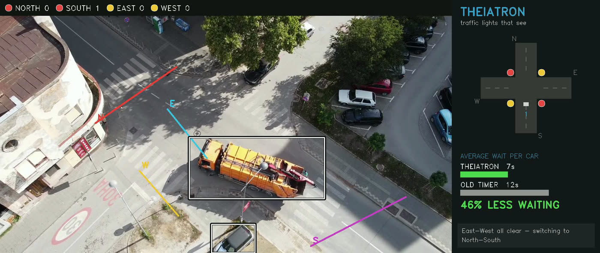

Traffic lights that see. On-device AI signal control — no internet required.
FINALIST · NEXTGEN 2026theiatron.vercel.app
01
The Problem
EVERY JUNCTION · EVERY DAY
Traffic lights run on timers set once — blind to the queues in front of them.
Adaptive systems exist, but at tens of thousands of dollars per junction,
most African cities will never deploy them.
Hours lost weekly per commuter
Fuel burned & emissions at idle
Legacy fix unaffordable at scale
02
The Solution
A CAMERA + A 6 MB BRAIN, ON THE POLE
IT SEES
Detects & tracks every vehicle, 10× per second.
IT MODELS
Queue demand & waiting under each signal plan.
IT DECIDES
Green goes where it's needed — behind hard safety interlocks.
SELF-CALIBRATING — learns a new intersection in 3 minFULLY OFFLINERETROFIT, NOT REBUILDTIMER FALLBACK PLANNED FOR PILOTFRACTION OF LEGACY COST
03
Evidence
REAL-VIDEO DEMAND · MODELED QUEUES
−45%average wait
−51%modeled p95 wait
2.9×real-time on CPU

LIVE PROTOTYPE — REAL FOOTAGE
OLD FIXED TIMER
10.9 s
THEIATRON
6.0 s
Average wait per vehicle — 40 real vehicles, identical demand for both controllers, replayable from recorded data.
04
Market
NIGERIA FIRST · THEN WEST AFRICA
WHO BUYSState & city governments, road agencies, toll & estate operators.
THE GAPThousands of junctions where legacy adaptive systems are unaffordable.
THE PRIZEA multi-billion-dollar global adaptive-traffic market, growing with urbanisation.
05
Traction
PRE-REVENUE · PROTOTYPE VALIDATED
✓ National finalistNextGen 2026 → London Grand Finale
✓ Working prototype−45% modeled wait on one clip
✓ Self-calibrationLearns intersections by watching
✓ Public demotheiatron.vercel.app + 3D twin
Honestly stated: no revenue or deployments yet — the first field pilot is exactly what this raise funds.
06
Revenue Model
HARDWAREPer-intersection unit sale — camera + edge controller, retrofit install.